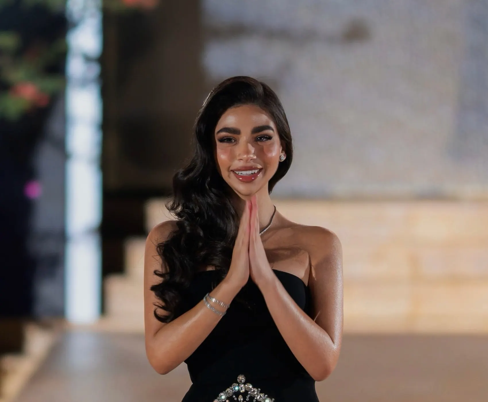
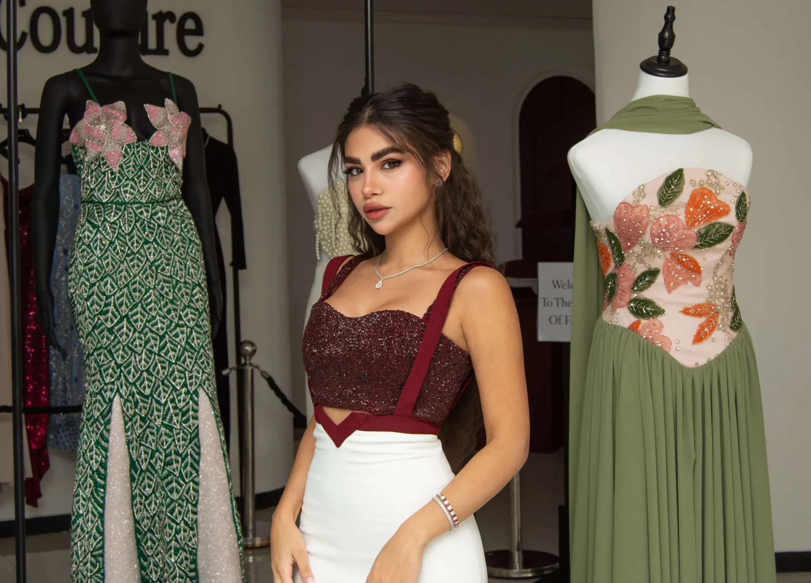

The houseالدار
Built for expressionصُنعت للتعبير
Haute couture and ready-to-wear, from a page opened online in 2021 to runways in Paris and the Dead Sea.هوت كوتور وأزياء جاهزة، من صفحة على الإنترنت عام 2021 إلى منصّات باريس والبحر الميت.

The founderالمؤسِّسة
Norjan Alkharouf
In October 2021, at 21, Norjan opened an online page with nothing but faith, determination and a vision: to redefine modern femininity through artistry and emotion.
Three landmark shows followed. The first, in Amman, was “Savage Sophistication”. Then Paris Fashion Week, with Umbra de Lumina. In October 2025 she came home with Aurora Bordeaux at Panorama Dead Sea.
Four years after her first online sketch, she opened her first atelier.
في تشرين الأول 2021، وفي عمر 21 عاماً، أطلقت نورجان صفحة على الإنترنت بالإيمان والإصرار ورؤية واحدة: أن تعيد تعريف الأنوثة العصرية بالفن والإحساس.
تلتها ثلاثة عروض بارزة: الأول في عمّان بعنوان «Savage Sophistication»، ثم أسبوع الموضة في باريس مع مجموعة Umbra de Lumina، وفي تشرين الأول 2025 عادت إلى الوطن بمجموعة Aurora Bordeaux في بانوراما البحر الميت.
وبعد أربع سنوات من أول رسمة على الإنترنت، افتتحت أول أتيليه لها.

The atelierالأتيليه
The burgundy threadالخيط العنابي
Every piece carries the house colour, burgundy: strength, depth and elegance.
The atelier keeps an archive of over 2,400 fabrics, from French silks and Italian satins to hand-embroidered tulles. Each gown takes hundreds of hours, from the first sketch to the final thread: draping, hand embroidery, crystal work and structural tailoring.
Before each new collection, the house holds private exhibitions for select clients, press and partners.
تحمل كل قطعة لون الدار، العنابي: لون القوة والعمق والأناقة.
يضمّ الأتيليه أرشيفاً من أكثر من 2,400 قماش، من الحرير الفرنسي والساتان الإيطالي إلى التول المطرّز يدوياً. ويستغرق كل فستان مئات الساعات، من الرسمة الأولى حتى الغرزة الأخيرة.
وقبل كل مجموعة جديدة، تقيم الدار معارض خاصة لعدد مختار من العملاء والصحافة والشركاء.
The showsالعروض
Three runwaysثلاث منصّات
- 01
Savage Sophistication
Ammanعمّان، العرض الأول
The first show, a trilogy that caught the attention of the Middle East.العرض الأول، ثلاثية لفتت أنظار الشرق الأوسط.
- 02
Umbra de Lumina
Paris Fashion Weekأسبوع الموضة في باريس
Umbra de Lumina, a study of shadow and light.أومبرا دي لومينا، دراسة في الظل والضوء.
- 03
Aurora Bordeaux
Panorama Dead Sea, Jordanبانوراما البحر الميت، الأردن · October 2025تشرين الأول 2025
Back home, before international guests who travelled for the show.العودة إلى الوطن، أمام ضيوف دوليين سافروا خصيصاً للعرض.